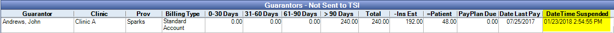

TSI Sent Accounts
Once an account has been sent to TSI for billing and collection management, it will list in the Sent Accounts tab.
In TSI Collections, click the Sent Accounts tab.

For this reason we recommend only using a single billing type marked C, and only changing the billing status of accounts being sent to TSI from the Unsent Accounts tab.
Clinics: Only available when clinics is turned on. Defaults to the clinic selected in the main menu. Click to change clinics.
Account Filters: To save criteria as the default for the next time you run the report, click Save as Default.
- Providers: Filter by provider (which provider?). Click the dropdown to change.
- Last Trans Type: Filter by the type of transaction that last occurred. Options include:
- Cancel: Debt collection activity for this account has been cancelled.
- Credit Adjustment
- Debit Adjustment:
- Paid in Full: Account has been paid in full.
- Placement: Account was recently sent to TSI to begin debt collection.
- Partial Payment: Guarantor made a partial payment but a balance remains.
- Paid in Full, Thank You: guarantor paid the total overdue balance and a thank you letter was sent.
- Reinstate:
- Suspend: Debt collection activity for this acount has been suspended.
- None: no filter based on last transaction.
- Account Age: Filter by account age.
- Minimum Balance: Only show guarantors who have a balance over a specific amount (e.g. only show accounts with a balance over $25).
- Days Since Last Payment: Only include guarantors who have not made a payment in a specific amount of days (e.g. only show guarantors who have not made a payment in the last 90 days).
- Show PatNums: Show patient numbers next to guarantors name. Defaults to the setting in Report Setup: Misc Settings for Show PatNum.
Guarantors - Sent to TSI: Add or remove columns in Display Fields, A/R Manager Sent Grid.
Export: Click to export the grid to excel.
Print: Click to print the grid.
Suspend TSI Billing and Collection Activity
- Under Account Status Updates, click the New Status dropdown, then select Suspend.
- Click the Billing Type dropdown and select the billing type to assign to the suspended accounts.
- Click Update TSI to send the information to TSI.
The guarantor will be removed from the Sent Accounts tab. The suspended date and time will list on the Unsent tab under DateTime Suspended.
Reinstate a Suspended Account
- On the Accounts Receivables Manager, Unsent Accounts tab, locate and highlight the suspended account(s).
- Click Send to TSI.
The guarantor will move to the Sent Accounts tab and the reinstate date and time will list under Last Transaction.
Cancel TSI Billing and Collection Activity
- On the Accounts Receivables Manager, Sent Accounts tab, select the Guarantor(s).
- Under Account Status Updates, click the New Status dropdown, then select Cancel.
- Click the Billing Type dropdown and select the billing type to assign to the cancelled accounts.
- Click Update TSI to send the information to TSI.
The guarantor will be removed from the Sent Accounts tab.
Payment Plans
If you create a Payment Plan for a patient whose guarantor has been sent to TSI a warning will display that a message will be sent to suspend the account with TSI. If you choose to continue the TSI account will be set to Suspended. After 50 days the TSI account will be automatically cancelled.
If the office decides to send the patient back to TSI for collections, the payment plan must be deleted before reinstating the account with TSI.